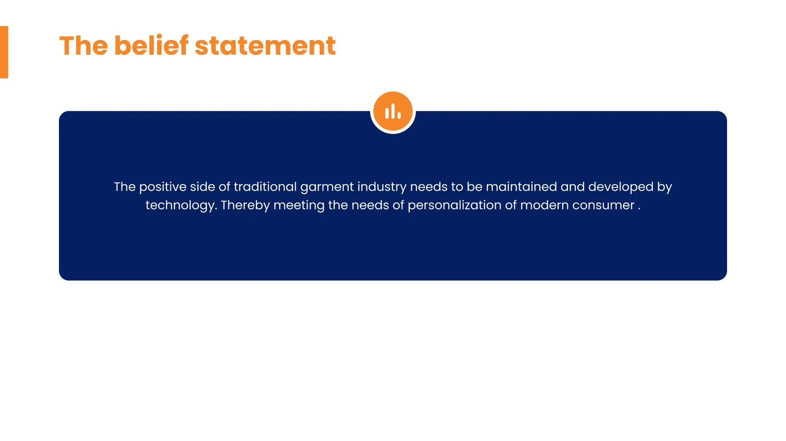
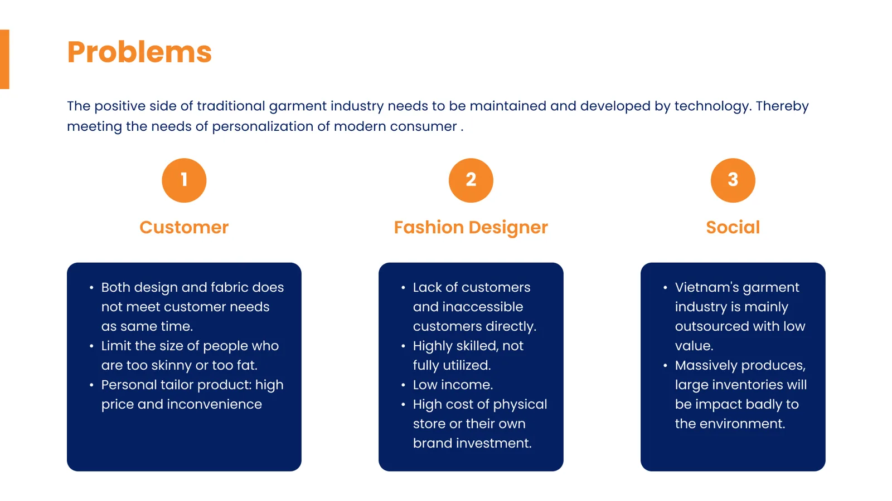
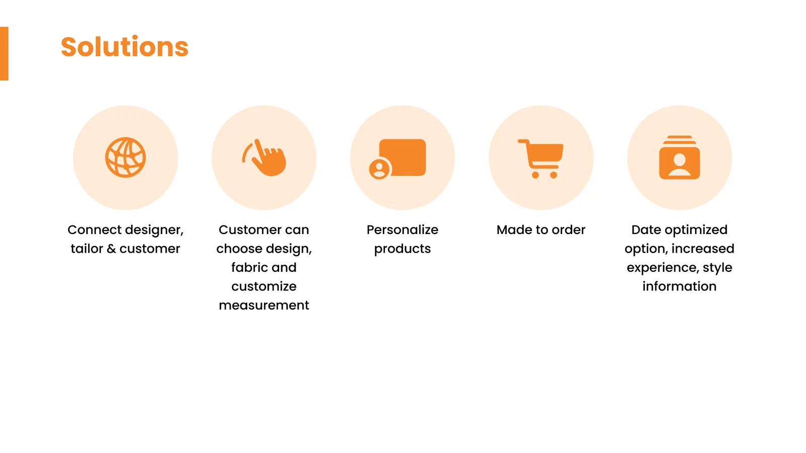
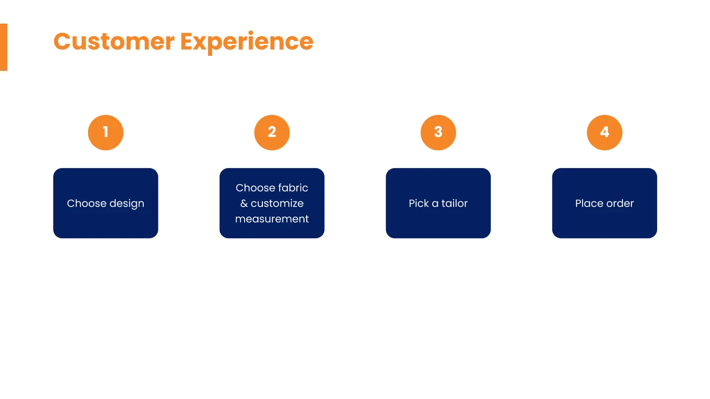
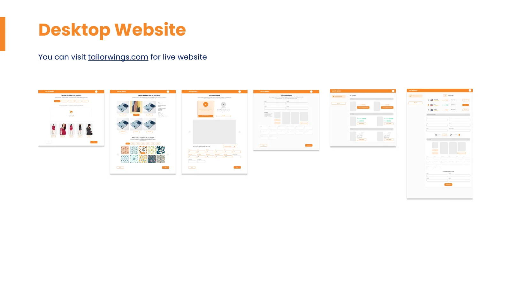
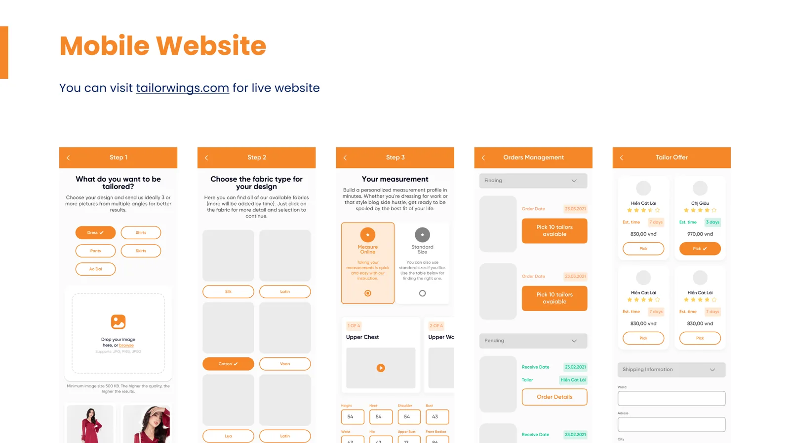
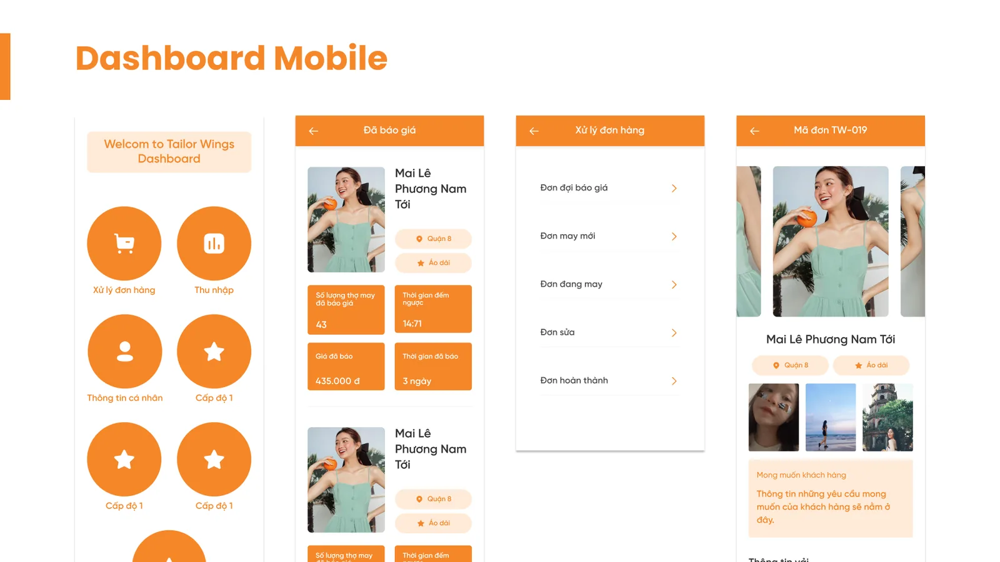
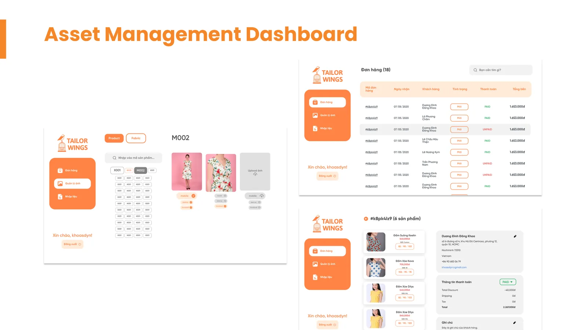

TailorWing: Connecting Expats with Saigon Tailors
TailorWing was a marketplace for made-to-measure clothing in Ho Chi Minh City, built for expats who wanted something made to fit and had no way to reach a tailor who spoke their language. I was the only designer, and I drew both sides of it: the customer site and the dashboard the tailors worked from.

Project Overview
A customer picked a garment, chose a fabric, entered their measurements and was matched with a tailor in the city, with the finished piece delivered in three to five working days and one free revision. The audience was expats living and working in Ho Chi Minh City, mostly foreign women. Vietnamese tailors are everywhere and highly skilled, but few speak enough English to take a brief directly, and an expat has no obvious way to find one.
I joined in February 2020 and stayed until April 2021, as the only designer in a team of three: a co-founder, one full-stack developer, and me. Requirements came straight from the co-founder, I built the mockups and prototypes in Figma, the three of us reviewed them together, and once the developer shipped we all did the QA.
Because the company was that small, the work ran well past drawing screens. Idea and direction, demo prototypes, design QA, developer handoff, and the design system were all mine to hold. Figma and user research were the entire toolset, the research half being the work of finding where customers and tailors were actually losing time. In 2020 we showed the product at Tech Fest, where I ran surveys on the floor and pitched it to potential customers.








What I Learned
Ship it and let the market answer. A startup has neither the time nor the money to spend on being sure, so the priority was always putting something in front of real customers. An idea the three of us agreed was good in a meeting could look completely different a few months after people used it. That is the habit I took from here: hold the idea loosely, because the market is the faster test.
A UX process is a reference, not a script. The design thinking steps I had learned from courses assumed a stability the company did not have. There was rarely a settled process, and when there was one it changed. Running every phase in order would have cost weeks we could not spare, so I learned to take the part of the method that answered the question in front of me and leave the rest. I had no design lead to check my work either, so file structure, presenting, and writing things down were all learned on the job.
The model was harder to run than a delivery app. Every order moved physical fabric between three addresses: customer to tailor, tailor to our office for a quality check, office to customer. A single revision repeated the whole loop, and with no couriers of our own each leg was paid out to Grab or GHN. The tailors were not exclusive to us, so their own orders came first, which meant late deliveries and the occasional lost roll of fabric. A made-to-measure garment also gives a customer plenty of reasons to ask for changes: a measurement typed in wrong, weight that shifted between order and delivery, a tailor reading the brief a different way. COVID arrived in March 2020 and pushed the team remote until July.
The product never reached the traction it needed. Looking back, the design was not the constraint, the operations were, and that is the part I would want modelled out before drawing a single screen next time.